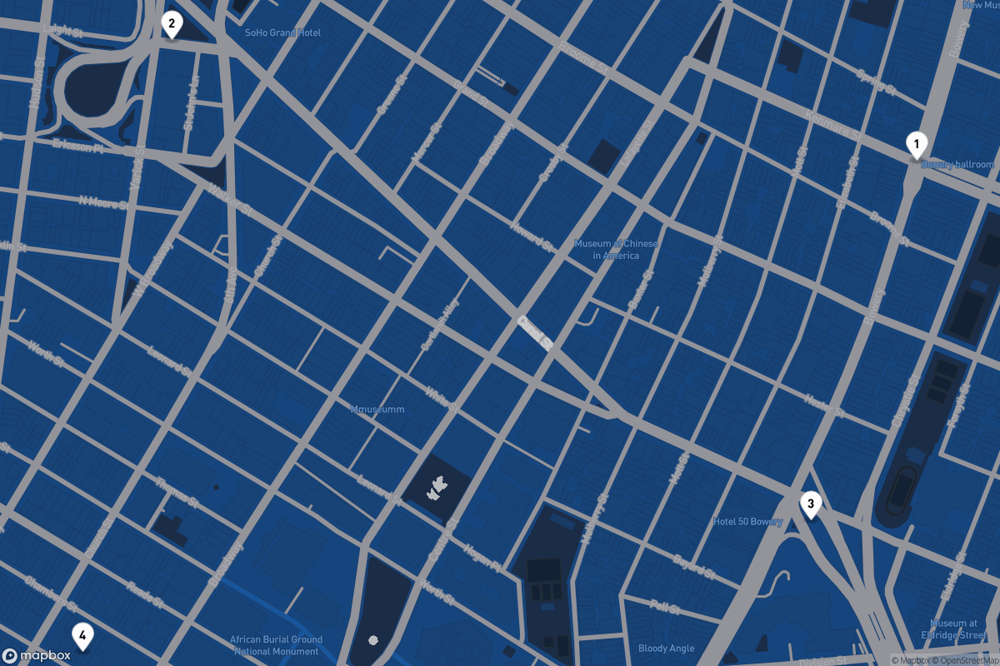
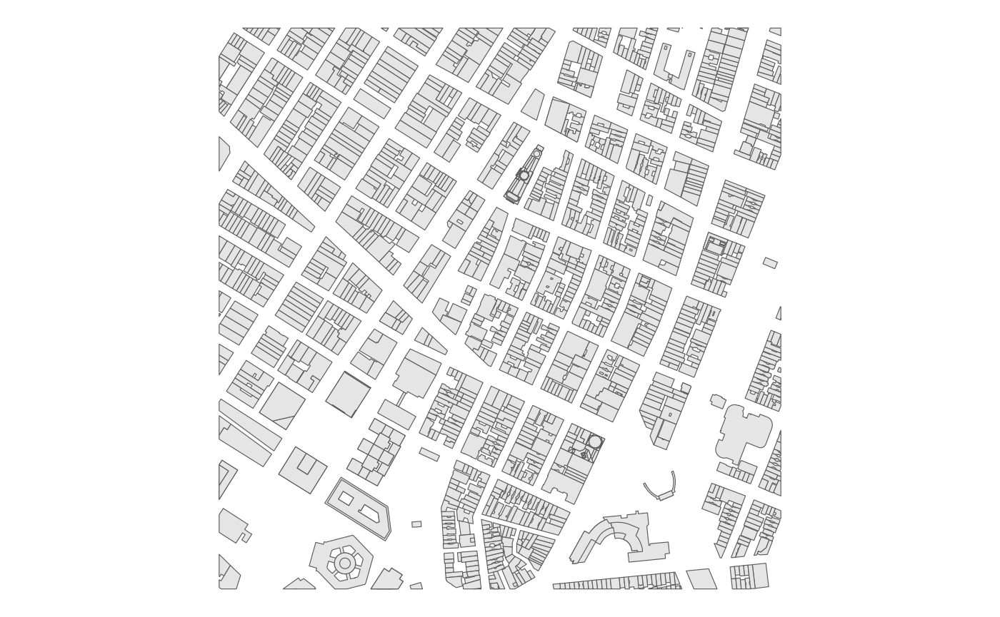

Mapping with mapboxapi
mapping.RmdWhile mapboxapi is not an interface to Mapbox GL JS, the Mapbox JavaScript library for web mapping, it does have functionality for map-making and visualization in combination with your spatial analysis workflows.
Interactive and static mapping with Mapbox styles
Let’s say that you’ve designed a custom map style in Mapbox Studio that you’d like to incorporate into your R projects. In this example, I’ll use Mapbox’s Cartogram tool to generate a custom map style from the R logo.

I can retrieve the style ID from my Mapbox account, or use the
list_styles() function in mapboxapi to get
the ID. With the style ID and my Mapbox username, the
addMapboxTiles() function allows for direct incorporation
of this style in an R Leaflet project.
library(leaflet)
library(mapboxapi)
leaflet() %>%
addMapboxTiles(style_id = "ckb83x2ur02oa1hpiq9zdt1i2",
username = "kwalkertcu") %>%
setView(lng = -74.0051,
lat = 40.7251,
zoom = 13)In some cases, you may be more interested in a static map rather than
an interactive one. Static maps can be created with
mapboxapi in two ways. Static maps can be generated
directly in mapboxapi with the
static_mapbox() function. This function accepts sf
polygon/linestring (of limited size) or marker overlays.
points_of_interest <- tibble::tibble(
longitude = c(-73.99405, -74.00616, -73.99577, -74.00761),
latitude = c(40.72033, 40.72182, 40.71590, 40.71428)
)
prepped_pois <- prep_overlay_markers(
data = points_of_interest,
marker_type = "pin-l",
label = 1:4,
color = "#fff"
)
map <- static_mapbox(
style_id = "ckb83x2ur02oa1hpiq9zdt1i2",
username = "kwalkertcu",
overlay_markers = prepped_pois,
width = 1200,
height = 800
)
map
The output is an object from the magick R package that can be further customized with magick functions.
Alternatively, users might be interested in retrieving static tiles
for use as a basemap in tmap or ggplot2 maps. For an input sf object,
the get_static_tiles() function will retrieve static tiles
as a raster object around the input. The example below fetches the
standard Light Mapbox basemap and uses it as a basemap for demographic
data obtained with tidycensus.
library(tidycensus)
library(tmap)
travis_income <- get_acs(
geography = "tract",
variables = "B19013_001",
state = "TX",
county = "Travis",
geometry = TRUE,
year = 2019
)
travis_tiles <- get_static_tiles(
location = travis_income,
zoom = 9,
style_id = "light-v9",
username = "mapbox"
)
tm_shape(travis_tiles) +
tm_rgb() +
tm_shape(travis_income) +
tm_polygons(col = "estimate",
alpha = 0.5, palette = "cividis",
title = "Median household income\n2015-2019 ACS") +
tm_layout(legend.outside = TRUE) +
tm_credits("Basemap © Mapbox, © OpenStreetMap", position = c("RIGHT", "BOTTOM"))
Reading vector tile data into R
Mapbox styles on interactive maps are generally delivered as vector tiles, and can be visualized in this way in R with the mapdeck R package by providing style information obtained from Mapbox Studio. mapboxapi also allows you to read data from vector tilesets directly into R as sf objects.
For example, let’s say I want to grab data from a vector tileset
nearby to one of the points of interest I just mapped. This can be
accomplished with the get_vector_tiles() function and an
appropriate tileset ID, which can be obtained from your Mapbox account.
The location to query can be a coordinate pair, an address, or an sf
object.
vector_extract <- get_vector_tiles(
tileset_id = "mapbox.mapbox-streets-v8",
location = c(-73.99405, 40.72033),
zoom = 15
)
names(vector_extract)## [1] "building" "landuse" "place_label"
## [4] "poi_label" "road" "structure"
## [7] "transit_stop_label" "water"I get back a number of layers, including roads, labels, and buildings, from the vector tile at zoom 15 that intersects my input coordinates. All of these elements are processed as sf objects that can be mapped with R tools:
library(ggplot2)
ggplot(vector_extract$building$polygons) +
geom_sf() +
theme_void()